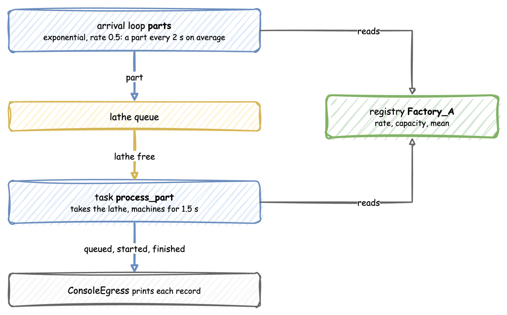

First Simulation
This tutorial builds one small factory: a lathe, parts arriving about every 2 seconds, and 1.5 seconds of machining per part. It then adds random machining times and capacity changes, and connects the factory to Kafka.
Each step shows the code three ways, in tabs: a YAML blueprint, the Builder (SimulationContext) and the Low-level API (DynamicRealtimeEnvironment and SimPy processes). Pick the tab of the way you write; every tab on the page switches with it. The three build the same simulation, so the records are the same. Ways to Write a Simulation explains how they relate.

Install
The core package includes the ddes command:
Describe the Factory
A simulation has a sim_id, here Factory_A, and its parameters: a resource called lathe with one unit, a service called machining that sets how long a part takes, and an arrival stream called parts that sets how often a part arrives.
simulation:
sim_id: Factory_A
factor: 1.0 # 1 simulated second takes 1 real second
resources:
lathe: {current_cap: 1, max_cap: 1}
services:
# With no std, a normal distribution returns its mean every time
machining: {dist: normal, mean: 1.5}
arrivals:
# One part every 2 seconds on average; each arrival spawns process_part
parts: {dist: exponential, rate: 0.5, spawn: process_part}
app = (
# 1 simulated second = 1 real second
SimulationContext(sim_id="Factory_A", factor=1.0)
.add_resource("lathe", current_cap=1, max_cap=1)
# With no std, a normal distribution returns its mean every time
.add_service("machining", dist="normal", mean=1.5)
# One part every 2 seconds on average
.add_arrival("parts", dist="exponential", rate=0.5)
)
PARAMS = SimParameter(
sim_id="Factory_A",
arrival={"parts": DistributionConfig(dist="exponential", rate=0.5)},
service={"machining": DistributionConfig(dist="normal", mean=1.5)},
resources={"lathe": CapacityConfig(current_cap=1, max_cap=1)},
)
Each value gets a path in the registry, such as Factory_A.arrival.parts.rate or Factory_A.resources.lathe.current_cap. A connector or a scenario changes a value through its path while the run continues; Live Parameters explains how.
Say What a Part Does
A part asks for the lathe, waits until it gets it, is machined for a time drawn from machining, and releases the lathe. It publishes a queued event when it asks, started when it gets the lathe, and a finished event at the end.
@app.task(service_id="machining", resource_id="lathe")
def process_part(part_id: int):
# Requests the lathe, waits the machining time, releases the lathe.
# The returned dictionary is the finished event's value.
return {"part_id": part_id}
@app.arrival_loop("parts")
def parts_generator(context: SimulationContext):
part_id = 0
while True:
yield context.wait_for_arrival("parts")
context.spawn(process_part(part_id))
part_id += 1
def process_part(env, sampler, lathe, part_id):
"""One part: wait for the lathe, machine it, release it."""
key = f"task-{part_id}"
path_id = "Factory_A.service.machining"
env.publish_event(key, {"path_id": path_id, "status": "queued"})
with lathe.request() as request:
yield request
env.publish_event(key, {"path_id": path_id, "status": "started"})
service = env.registry.get_config(path_id)
yield env.timeout(sampler.sample(service))
env.publish_event(key, {"part_id": part_id})
def parts_generator(env, sampler, lathe):
"""Starts one process_part for every arrival."""
arrival = env.registry.get_config("Factory_A.arrival.parts")
part_id = 0
while True:
yield env.timeout(sampler.sample(arrival))
env.process(process_part(env, sampler, lathe, part_id))
part_id += 1
The YAML task and the builder's @app.task publish the three events and handle the lathe for you; the low-level process does each step itself. The arrival loop starts one part for every arrival: spawn in YAML, @app.arrival_loop in the builder, and parts_generator in the low-level API.
Print the Records
A sink, called an egress, receives every record the simulation publishes. ConsoleEgress prints them; Connectors lists the others.
Run It
def run(until=10.0, factor=1.0):
env = DynamicRealtimeEnvironment(factor=factor)
env.registry.register_sim_parameter(PARAMS)
env.setup_egress(SINKS)
lathe = DynamicResource(env, "Factory_A", "lathe")
sampler = Sampler(rng=np.random.default_rng())
env.process(parts_generator(env, sampler, lathe))
try:
env.run(until=until)
finally:
env.teardown()
if __name__ == "__main__":
print("Starting simulation...")
run()
Start it from a terminal:
At factor=1.0 one simulated second takes one real second, so the run takes 10 seconds. [EVT] lines are events and [TEL] lines are telemetry:
[TEL] {'sim_ts': 0.0, 'timestamp': '...', 'path_id': 'system.simulation.lag_seconds', 'value': 0.0}
[EVT] {'sim_ts': 0.171, 'timestamp': '...', 'key': 'task-0', 'value': {'path_id': 'Factory_A.service.machining', 'status': 'queued'}}
[EVT] {'sim_ts': 0.171, 'timestamp': '...', 'key': 'task-0', 'value': {'path_id': 'Factory_A.service.machining', 'status': 'started'}}
[EVT] {'sim_ts': 1.671, 'timestamp': '...', 'key': 'task-0', 'value': {'part_id': 0}}
The only telemetry is system.simulation.lag_seconds, which every run with an egress publishes once per simulation second: how far the simulation is behind the wall clock. The arrival times are random, so each run shows different values.
Add Randomness and Capacity Changes
Real machining times vary. milling takes 3 seconds on average, give or take 0.5, and a seed makes the draws the same on every run. The lathe gets room for up to 5 units:
simulation:
sim_id: Factory_A
factor: 1.0
random_seed: 42 # the same draws on every run
resources:
lathe: {current_cap: 1, max_cap: 5} # room for up to 5 lathes
services:
# Milling takes 3 seconds on average, give or take 0.5
milling: {dist: normal, mean: 3.0, std: 0.5}
app = (
# Same draws every run
SimulationContext(sim_id="Factory_A", factor=1.0, random_seed=42)
.add_resource("lathe", current_cap=1, max_cap=5) # room for up to 5 lathes
# Milling takes 3 seconds on average, give or take 0.5
.add_service("milling", dist="normal", mean=3.0, std=0.5)
.add_arrival("parts", dist="exponential", rate=0.5)
.add_egress(ConsoleEgress())
)
PARAMS = SimParameter(
sim_id="Factory_A",
arrival={"parts": DistributionConfig(dist="exponential", rate=0.5)},
# Milling takes 3 seconds on average, give or take 0.5
service={"milling": DistributionConfig(dist="normal", mean=3.0, std=0.5)},
resources={"lathe": CapacityConfig(current_cap=1, max_cap=5)}, # up to 5 lathes
)
SEED = 42 # Sampler(rng=np.random.default_rng(SEED)) in run: same draws every run
Now change the capacity while the factory runs: three lathes from 10 seconds, two from 20. The YAML scenario and the process in the other two tabs both act on the simulation clock, so the changes land at exactly those times on every run, at any factor:
def capacity_plan(context: SimulationContext):
"""Three lathes from t=10, two from t=20, on the simulation clock."""
path = "Factory_A.resources.lathe.current_cap"
yield context.env.timeout(10.0)
context.env.registry.update(path, 3)
yield context.env.timeout(10.0)
context.env.registry.update(path, 2)
app.add_process(capacity_plan)
def capacity_plan(env):
"""Three lathes from t=10, two from t=20, on the simulation clock."""
path = "Factory_A.resources.lathe.current_cap"
yield env.timeout(10.0)
env.registry.update(path, 3)
yield env.timeout(10.0)
env.registry.update(path, 2)
In the first 10 seconds parts arrive faster than one lathe finishes them, so the queue grows. At 10 seconds three lathes drain it. At 20 seconds the capacity drops to two; parts already on a third lathe finish, and no new part starts until two or fewer are busy, as Resources shows.
Connect to Kafka
Install the Kafka extra and start a broker with odctl, a separate command-line tool installed once with pip install "odctl>=1.0,<2":
Replace the console sink with Kafka, and add a Kafka ingress so the run takes parameter changes from the sim-config topic. The rest of the step 2 factory stays as it is:
ingress:
# Reads {"path_id": ..., "value": ...} messages
- type: Kafka
config: {topic: sim-config, bootstrap_servers: localhost:9092}
egress:
- type: Kafka
config:
bootstrap_servers: localhost:9092
event_topic: sim-events
telemetry_topic: sim-telemetry
Run it, and while it runs, send a capacity change from another terminal. The broker's own tools are inside its container:
echo '{"path_id": "Factory_A.resources.lathe.current_cap", "value": 3}' | docker exec -i kafka \
/opt/kafka/bin/kafka-console-producer.sh --bootstrap-server broker-1:19092 --topic sim-config
The ingress applies the change to the registry, and the lathe grows to three units without stopping the run. Stop the run with Ctrl+C, and the broker with odctl down kafka-lite --volumes.
Full Files
The complete first factory, which the documentation tests run:
# The First Simulation tutorial: the factory as a blueprint.
# Run it with: ddes run first_factory.yaml
simulation:
sim_id: Factory_A
factor: 1.0 # 1 simulated second takes 1 real second
resources:
lathe: {current_cap: 1, max_cap: 1}
services:
# With no std, a normal distribution returns its mean every time
machining: {dist: normal, mean: 1.5}
arrivals:
# One part every 2 seconds on average; each arrival spawns process_part
parts: {dist: exponential, rate: 0.5, spawn: process_part}
tasks:
process_part:
service: machining
resource: lathe
# The finished event's value; id_field adds the task id as part_id
payload: {}
id_field: part_id
egress:
- type: Console
run:
until: 10
"""The First Simulation tutorial: the factory, with the SimulationContext builder.
One lathe, parts arriving about every 2 seconds, and 1.5 seconds of machining per
part. Every record is printed to the terminal.
"""
import logging
from dynamic_des import ConsoleEgress, SimulationContext
logging.basicConfig(
level=logging.INFO, format="%(levelname)s [%(asctime)s] %(message)s"
)
app = (
# 1 simulated second = 1 real second
SimulationContext(sim_id="Factory_A", factor=1.0)
.add_resource("lathe", current_cap=1, max_cap=1)
# With no std, a normal distribution returns its mean every time
.add_service("machining", dist="normal", mean=1.5)
# One part every 2 seconds on average
.add_arrival("parts", dist="exponential", rate=0.5)
)
@app.task(service_id="machining", resource_id="lathe")
def process_part(part_id: int):
# Requests the lathe, waits the machining time, releases the lathe.
# The returned dictionary is the finished event's value.
return {"part_id": part_id}
@app.arrival_loop("parts")
def parts_generator(context: SimulationContext):
part_id = 0
while True:
yield context.wait_for_arrival("parts")
context.spawn(process_part(part_id))
part_id += 1
app.add_egress(ConsoleEgress())
if __name__ == "__main__":
app.run(until=10.0)
"""The First Simulation tutorial: the factory, on the low-level API.
One lathe, parts arriving about every 2 seconds, and 1.5 seconds of machining per
part. Every record is printed to the terminal.
"""
import logging
import numpy as np
from dynamic_des import (
CapacityConfig,
ConsoleEgress,
DistributionConfig,
DynamicRealtimeEnvironment,
DynamicResource,
Sampler,
SimParameter,
)
logging.basicConfig(
level=logging.INFO, format="%(levelname)s [%(asctime)s] %(message)s"
)
PARAMS = SimParameter(
sim_id="Factory_A",
arrival={"parts": DistributionConfig(dist="exponential", rate=0.5)},
service={"machining": DistributionConfig(dist="normal", mean=1.5)},
resources={"lathe": CapacityConfig(current_cap=1, max_cap=1)},
)
def process_part(env, sampler, lathe, part_id):
"""One part: wait for the lathe, machine it, release it."""
key = f"task-{part_id}"
path_id = "Factory_A.service.machining"
env.publish_event(key, {"path_id": path_id, "status": "queued"})
with lathe.request() as request:
yield request
env.publish_event(key, {"path_id": path_id, "status": "started"})
service = env.registry.get_config(path_id)
yield env.timeout(sampler.sample(service))
env.publish_event(key, {"part_id": part_id})
def parts_generator(env, sampler, lathe):
"""Starts one process_part for every arrival."""
arrival = env.registry.get_config("Factory_A.arrival.parts")
part_id = 0
while True:
yield env.timeout(sampler.sample(arrival))
env.process(process_part(env, sampler, lathe, part_id))
part_id += 1
SINKS = [ConsoleEgress()] # passed to env.setup_egress in run below
def run(until=10.0, factor=1.0):
env = DynamicRealtimeEnvironment(factor=factor)
env.registry.register_sim_parameter(PARAMS)
env.setup_egress(SINKS)
lathe = DynamicResource(env, "Factory_A", "lathe")
sampler = Sampler(rng=np.random.default_rng())
env.process(parts_generator(env, sampler, lathe))
try:
env.run(until=until)
finally:
env.teardown()
if __name__ == "__main__":
print("Starting simulation...")
run()
Next, Ways to Write a Simulation compares the three APIs, and the examples show each connector.